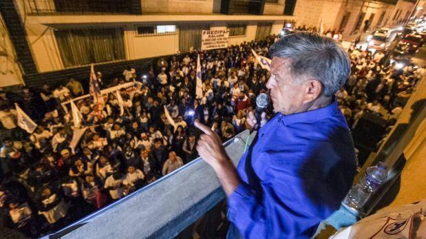

El organismo informó anoche que indaga al candidato debido a las denuncias de que habría cometido plagio en la tesis que presentó a la Universidad Complutense de Madrid para obtener el grado de doctor.
Pero el tribunal precisó que las pesquisas a César Acuña no "trasgreden las competencias de los órganos electorales, pues no se pretende verificar si mintió en su hoja de vida o incumplió con los requisitos que se exigen para inscribirse como candidato, sino que incide en la difusión de dicha tesis en el marco de su campaña”.
